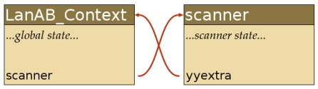

Writing a Reentrant Parser with Flex and Bison
(By Edsko de Vries,
August 2006)
This article explains how to create a reentrant parser with
Flex and Bison, and how to include more than one parser in the same
application. It is not suitable as an introduction to either
Flex or Bison; we assume the reader is familiar with both tools, as
well as with C and C++.
The problem we will set ourselves is to write a processor for
the language ABCD. ABCD is a small toy language
designed specifically for this tutorial. It is made up of two
sub-languages, AB and CD; here is a simple example in
language AB:
abbab
Each “program” in ABCD evaluates to an
integer. The first occurrence of an a has value 1, the
second occurrence has value 2, etc., and similarly for
bs. Thus; the example above has value 9. In addition,
you can “escape” to language CD using square
brackets [...]:
a[cdd]bb[c]a
The value of a program in language CD is
calculated analogously to the value of a program in language
AB: the first c has value 1, the second
c has value 2, etc., and similarly for d.
Moreover, values are always calculated with respect to the
enclosing square brackets (so, the value of the second example is
11).
Finally, in language CD, you can escape back to language
AB, so you can nest either language in the other, creating
arbitrarily complex nested strings. For example,
a[cd[a[d]]d]b[c[[cd]]]
also has value 11. The point of the exercise is that languages
AB and CD will each get their own parser, so we will
need to combine two parsers into one application. The parsers will
need global state (in addition to the parser's internal
bookkeeping) to be able to calculate the value of each character.
Moreover, since it is possible to have an AB string inside
another AB string (by escaping twice), we may have to
instantiate a new AB parser while the “old” one
is still active. Therefore it is important that the parsers are
reentrant.
The code for the application we will develop in this tutorial
can be found in reentrantparser.tar.gz.
High Level Overview
Before we start looking at the details, we will give a high
level overview of the solution first. There is more than one way to
solve this problem; the method I will present here is the one I
believe is the least messy, but that is of course a matter of
opinion; one alternative (using a C++ lexer) is discussed briefly
at the end of this tutorial.
Unfortunately, although the solutions offered by Flex and Bison
are very similar, they are slightly different in the details, so it
will be important to remember which tool we are talking about.
When Flex generates a reentrant scanner, the function
yylex will get an additional argument
scanner. This argument is a pointer to a data
structure that represents the state of the scanner. Before we start
parsing, we must initialise this state, and then pass the state in
to yylex every time it is invoked. The scanner state
has a data field, called yyextra, of a user-specified
type, that can be used for additional state. We will use
yyextra to determine the semantic value of each
character in the input (according to the rules explained in the
introduction).
The Bison generated parser yyparse also gets an
additional argument, but this argument represents the user-defined
state only. The Bison internal global state is stored in local
variables inside yyparse, and is completely invisible
to the user.
We will create a class LanAB_Context (for
“language AB context”) to hold the global
(user-defined) state. We will pass in an object of type
LanAB_Context to yyparse. Since
yyparse needs to call yylex, we will find
it useful to store a reference to the scanner object
inside LanAB_Context. However, since we only have
access to the scanner object from within
yylex, we will use yyextra (mentioned
above) inside the scanner object to point back to the
LanAB_Context object. Graphically:

The Parser Context
The parser context will be represented by the following class:
#ifndef LANAB_CONTEXT
#define LANAB_CONTEXT
#include <iostream>
using namespace std;
class LanAB_Context
{
public:
void* scanner; // the scanner state
int result; // result of the program
int a; // value of the next a
int b; // value of the next b
istream* is; // input stream
int esc_depth; // escaping depth
public:
LanAB_Context(istream* is = &cin)
{
init_scanner();
this->is = is;
a = 1;
b = 1;
}
virtual ~LanAB_Context()
{
destroy_scanner();
}
// Defined in LanAB.l
protected:
void init_scanner();
void destroy_scanner();
};
int LanAB_parse(LanAB_Context*);
#endif // LANAB_CONTEXT
The first section of the class lists the variables that make up
the user state of the parser. Most of the variables will be
self-explanatory, with the exception perhaps of is and
esc_depth, which we will explain when we discuss the
lexical analyser.
The constructor of LanAB_Context initialises some
of the parser state, and calls init_scanner. The
bodies for init_scanner and
destroy_scanner will be provided in the Flex file, and
will call yylex_init and yylex_destroy to
initialise and free the scanner state, respectively.
The Lexer
We will explain the code for the lexer bit by bit. First of
all, we need to tell Flex to create a reentrant parser:
%option reentrant
Since we will need two lexers in our application, they cannot
both be called yylex. Hence, we set the prefix to
“LanAB_” so that the scanner will be called
LanAB_lex:
%option prefix="LanAB_"
The next two options tell Flex that we are interfacing with a
Bison generated parser; bison-bridge adds an argument
yylval to yylex, and
bison-locations adds an argument code
yylloc for location tracking.
%option bison-bridge
%option bison-locations
We cannot use the standard yywrap provided by
libfl because we have changed the yy
prefix, but since we don't need yywrap at all, we
simply disable it.
%option noyywrap
We will use Flex's built-in support for line numbers:
%option yylineno
Next we need a bit of C code. First, we need to include the
header file that defines the parser context, and the header file
generated by Bison (for the token identifiers).
%{
#include "LanAB_Context.h"
#include "LanAB.tab.h"
As mentioned in the overview, the scanner state will include a
field called yyextra that can be used for user-defined
state. The type of this field is specified by
YY_EXTRA_TYPE:
#define YY_EXTRA_TYPE LanAB_Context*
To set line numbers, we set yyloc->first_line
to yylineno each time a token is recognised:
#define YY_USER_ACTION yylloc->first_line = yylineno;
Finally, because we need to parse strings as well as files, we
redefine YY_INPUT and give it a C++ flavour. It will
use the istream from the parser context to read the
next character. The parser context defaults is to
cin, but we will set it to an
istringstream later on to parse a nested program.
#define YY_INPUT(buf,result,max_size) \
{ \
char c; \
(*yyextra->is) >> c; \
if(yyextra->is->eof()) \
result = YY_NULL; \
else { \
buf[0] = c; \
result = 1; \
} \
}
%}
We define an exclusive scanner state ESC to deal
with escaping:
%x ESC
We can now define the parser proper. When we see an
“a” we use the parser state to determine its semantic
value (see the discussion of the parser, below, for a description
of yylval), and return token A to the
parser (and similarly for “b”). When we see an open
square bracket, we set the ”escape depth” to 1 and set
the scanner state to ESC.
%%
"a" yylval->integer = yyextra->a++; return A;
"b" yylval->integer = yyextra->b++; return B;
"[" yyextra->esc_depth = 1; BEGIN(ESC);
. return ERR;
\n /* ignore */
In ESC, we increase the escape depth for every open
square bracket we see, and decrease it for every close bracket.
When the depth reaches 0, we return an ESCAPE token to
the parser with the appropriate semantic value, and reset the
scanner state.
<ESC>"]" %{
yyextra->esc_depth--;
if(yyextra->esc_depth == 0)
{
yylval->cptr = strndup(yytext, yyleng-1);
BEGIN(INITIAL);
return ESCAPE;
}
else
{
yymore();
}
%}
<ESC>"[" yymore(); yyextra->esc_depth++;;
<ESC>. yymore();
In the scanner epilogue we provide the bodies for
init_scanner and destroy_scanner. Note
the call to yyset_extra to initialise the
yyextra field.
%%
void LanAB_Context::init_scanner()
{
yylex_init(&scanner);
yyset_extra(this, scanner);
}
void LanAB_Context::destroy_scanner()
{
yylex_destroy(scanner);
}
The Parser
The start of the definition of the parser is nearly identical
to the start of the lexical analyser. We tell Bison that we need a
reentrant parser, and that the prefix should be changed from
yy to LanCD_:
%pure-parser
%name-prefix="LanAB_"
Next we need to set a few configuration options to enable
location tracking, the generation of a header file, and verbose
error messages:
%locations
%defines
%error-verbose
We tell Bison that yyparse should take an extra
parameter context, and that yylex
(LanAB_lex) takes an additional argument
scanner (see below for an explanation of how Bison
knows which value to use for scanner).
%parse-param { LanAB_Context* context }
%lex-param { void* scanner }
We use Bison's %union construct to define a
semantic value type for integers and character pointers (strings).
The terminal symbols A and B, as well as
the rule lanab all have type integer;
only the ESCAPE token has type cptr
(string):
%union
{
int integer;
char* cptr;
}
%token <integer> A
%token <integer> B
%token <cptr> ESCAPE
%token ERR
%type <integer> lanab
As in the lexer, we need a bit of C code in the prologue. Note
that this C code is defined after the definition of the
%union, which means that this code will go into the
C++ file (LanAB.tab.c) instead of the header file
(LanAB.tab.h). We need a few system headers, and we need
to include the parser context headers LanAB_Context
and LanCD_Context (we have not shown
LanCD_Context above but it is virtually the same as
LanAB_Context; the full code can be found in the source archive):
%{
#include <iostream>
#include <sstream>
#include "LanAB_Context.h"
#include "LanCD_Context.h"
using namespace std;
We need to declare the type of the lexer:
int LanAB_lex(YYSTYPE* lvalp, YYLTYPE* llocp, void* scanner);
and define the error handler. Note that the error handler is
passed the parser context and location information; these
parameters are automatically added to the error handler when
creating a pure (reentrant) parser.
void LanAB_error(YYLTYPE* locp, LanAB_Context* context, const char* err)
{
cout << locp->first_line << ":" << err << endl;
}
We told Bison above that yylex takes an additional
argument scanner of type void*, but we
haven't yet told it which value to use for scanner.
The way this works is that Bison will use the name of the argument
also as the value of the argument; in other words, it will call
yylex as yylex(..., scanner). Therefore,
we provide a macro scanner that extracts the scanner
state from the parser state:
#define scanner context->scanner
%}
The definition of the grammar itself is reasonably
straightforward. We will show the entire grammar and then explain
some details:
%%
start:
lanab
{ context->result = $1; }
;
lanab:
A lanab
{ $$ = $1 + $2; }
| B lanab
{ $$ = $1 + $2; }
| ESCAPE lanab
{
{
istringstream* is = new istringstream($1);
LanCD_Context context(is);
LanCD_parse(&context);
$$ = context.result + $2;
}
}
| /* empty */
{ $$ = 0; }
;
The only rule, really, that needs an explanation in this
definition is the rule that deals with escapes. When we get an
escape string, we set up a brand new parser context for the
other parser (for the CD language). We create a new
istringstream based on the escape string to act as the
input for the new parser (this is why we redefined
YY_INPUT in the lexer) and invoke the parser. The
result of the parser (as extracted from its context) is used as the
semantic value of the escape string.
The Main Application
The main application is very straightforward:
#include <iostream>
#include "LanAB_Context.h"
using namespace std;
int main()
{
LanAB_Context context;
if(!LanAB_parse(&context))
{
cout << context.result << endl;
}
}
Of course, for the application to be complete, we also need to
define the parser context LanCD_Context.h, lexer
LanCD.l and scanner LanCD.y for the
CD language, but they are very similar to their
AB counterparts. You can find the full application in
reentrantparser.tar.gz.
As an alternative to %option reentrant, one can
also specify %option c++ in the Flex definition. This
encapsulates the generated scanner in a class called
yyFlexLexer, which makes it automatically reentrant.
However, in my opinion this leads to inelegant code.
yylex can no longer be redefined to take
additional parameters. To give the scanner access to a
(user-defined) state, you need to make yyFlexLexer
inherit from the parser context. To be more precise, you need to
define a new class Lexer that inherits from both
yyFlexLexer and LanAB_Context, then use
the %option yyclass to tell Flex to add the
yylex method to your Lexer class instead
of to yyFlexLexer. You must then also add some glue
code to add yylval and yylloc to the
parser context in such a way that Bison knows how to access them.
Not only is this rather messy, it also means that the scanner has a
completely different method of accessing the context (through
inheritance) than the parser (through additional parameters), which
does little to improve the readability of the code.
Things really get messy when you need more than one (C++)
scanner in the one application. It can be done, but it isn't very
easy and certainly not very obvious. Moreover, even the authors of
Flex aren't very confident; the regenerated C++ code contains the
following comment (Flex version 2.5.33):
/* The c++ scanner is a mess. The FlexLexer.h header file relies on the
* following macro. This is required in order to pass the
* c++-multiple-scanners test in the regression suite. We get reports
* that it breaks inheritance. We will address this in a future release
* of flex, or omit the C++ scanner altogether.
*/
#define yyFlexLexer yyFlexLexer
which doesn't inspire much confidence. All in all, I
believe the solution as presented in this tutorial is
better, but if you think otherwise, please let me know.
|